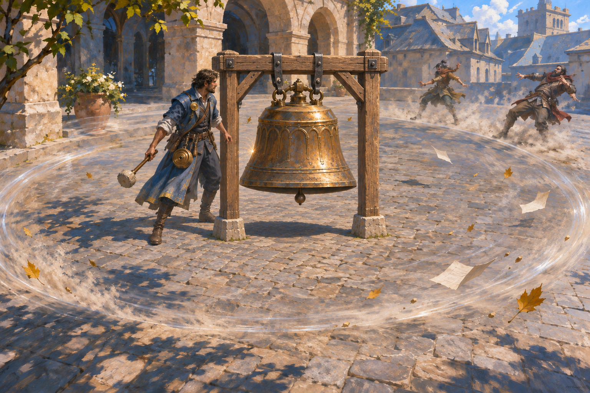
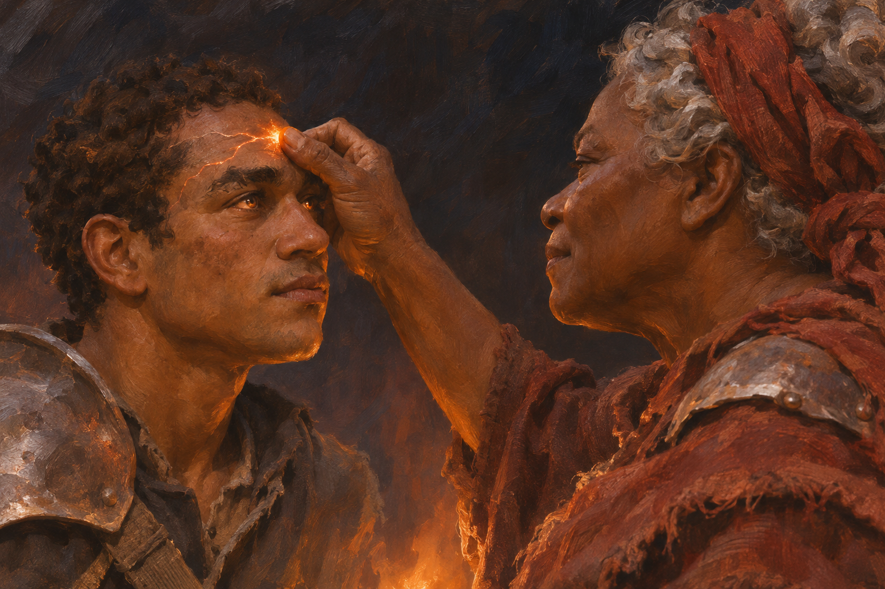
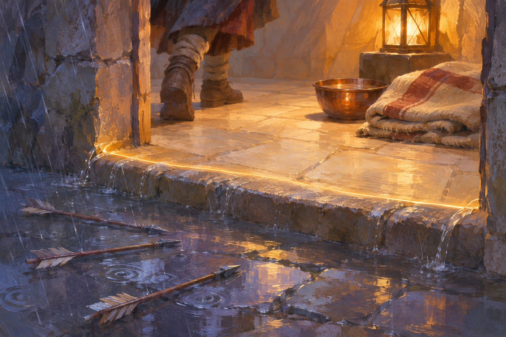
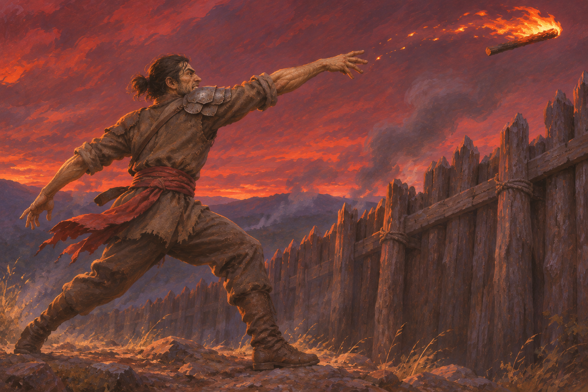
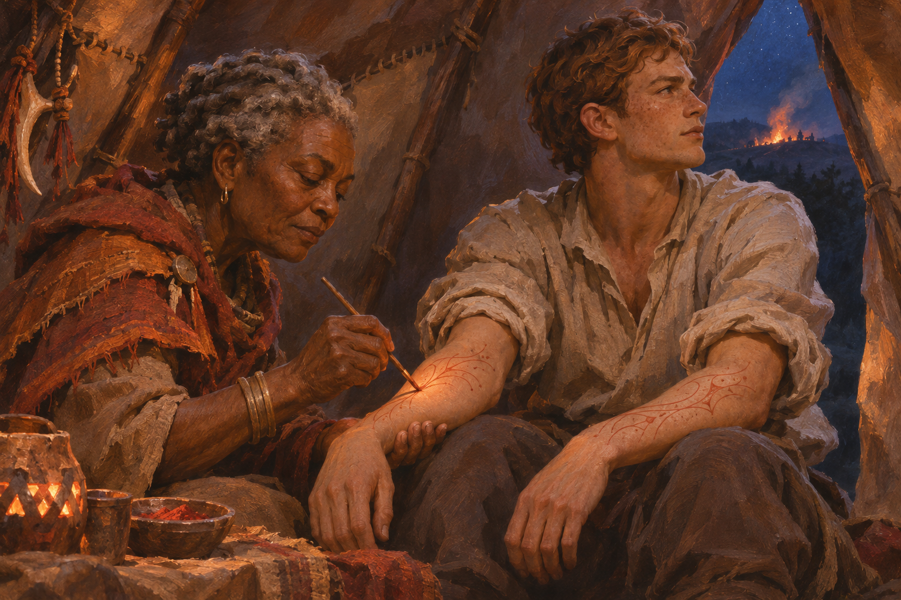

Eight paintings selected from the art actually mapped to current cards. IG1–2 have explicit written reservations. IG3–8 are the six lowest-ranked current pieces in the saved comparison data, with only two comparisons each and earlier positive feedback. They are test candidates, not rejected work.
All originals are preserved. This experiment changes neither the game nor the art-direction skill. Open before / after comparison →
Explicit reservation · VigilIG1 · Oath sentinel

Least-liked in its Vigil group; no reason recorded.
Comparison score 988.0 · 0/1 wins. Lost to Debt Collector's Blade.Keep his calm presence and equipment. Test simpler paint, a clearer light direction and fewer competing highlights.
Explicit reservation · GnosisIG2 · Harmonic burst

Finalized, but explicitly “not a favorite.” You preferred other Gnosis mechanisms to sound.
Comparison score 988.0 · 0/1 wins. Lost to Rain gathering.Keep the correctly suspended bell. Test a subtler pressure wave and a clearer strike, with a quieter plaza.
Lowest-ranked group · FervorIG3 · Cinder firebrand

Two comparison losses; earlier feedback praised all Fervor cards in Set 8.
Comparison score 976.0 · 0/2 wins. Lost to Cinderfall and The Rain That Rises.Keep the confident stride, orange fire and indigo night. Test a unified shadow shape and less surface detail.
Lowest-ranked group · FervorIG4 · Anoint with embers

Two comparison losses; earlier called “really good.”
Comparison score 976.0 · 0/2 wins. Lost to Cobalt rapier — equipment card and Dawnsail Passage.Keep the intimate brow contact. Test matte facial planes, natural fire reflections in the eyes and smaller magical accents.
Lowest-ranked group · VigilIG5 · Sanctuary Threshold

Two comparison losses; earlier liked, specifically including its fallen arrows.
Comparison score 976.0 · 0/2 wins. Lost to Unmake the Pattern and Copper Street Locksmith.Keep the refuge, blanket, copper bowl and arrows. Test a localized lantern pool and quieter wet-stone reflections.
Lowest-ranked group · FervorIG6 · Hurled brand

Two comparison losses; earlier feedback praised all Fervor cards in Set 8.
Comparison score 976.0 · 0/2 wins. Lost to Roof glider and Collect the tithe.Keep the forceful throw and red dusk. Test a darker figure against the sky and fire limited to the brand.
Lowest-ranked group · GenesisIG7 · Alderkin elder

Two comparison losses; earlier called good.
Comparison score 976.4 · 0/2 wins. Lost to Barrow mark and Black enamel field kit.Keep the huge elder, aqueduct and nesting birds. Test simpler bark planes and a clearer gaze toward the stone beneath its hand.
Lowest-ranked group · FervorIG8 · Emberward

Two comparison losses; earlier feedback praised all Fervor cards in Set 8.
Comparison score 976.8 · 0/2 wins. Lost to Court Informant and Withering hex.Keep both people, the ward painting and the young man's distant attention. Test coherent firelight and less detailed skin and cloth.